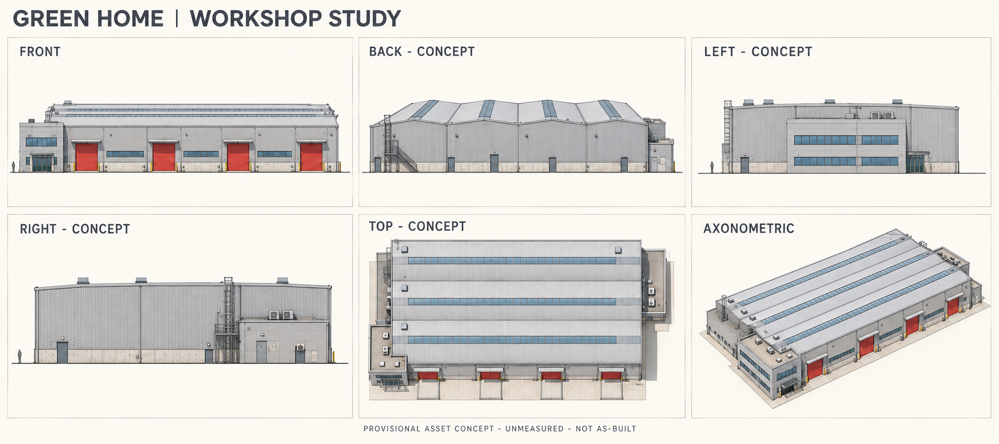
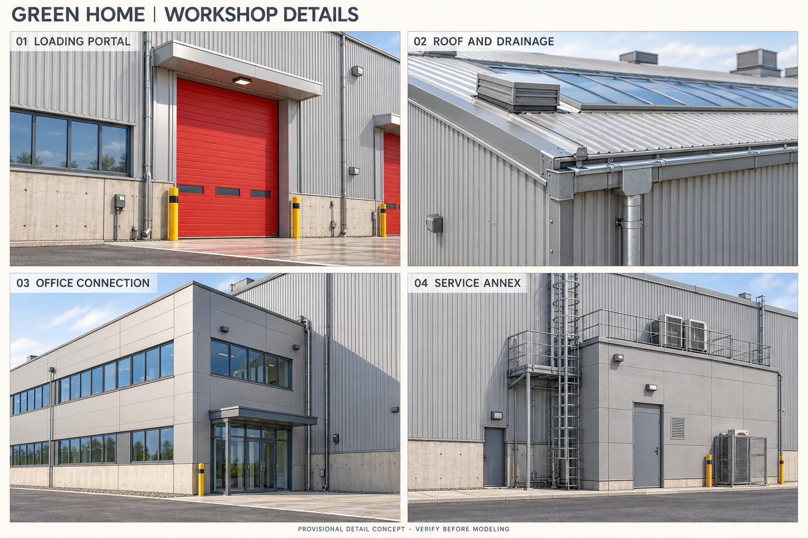
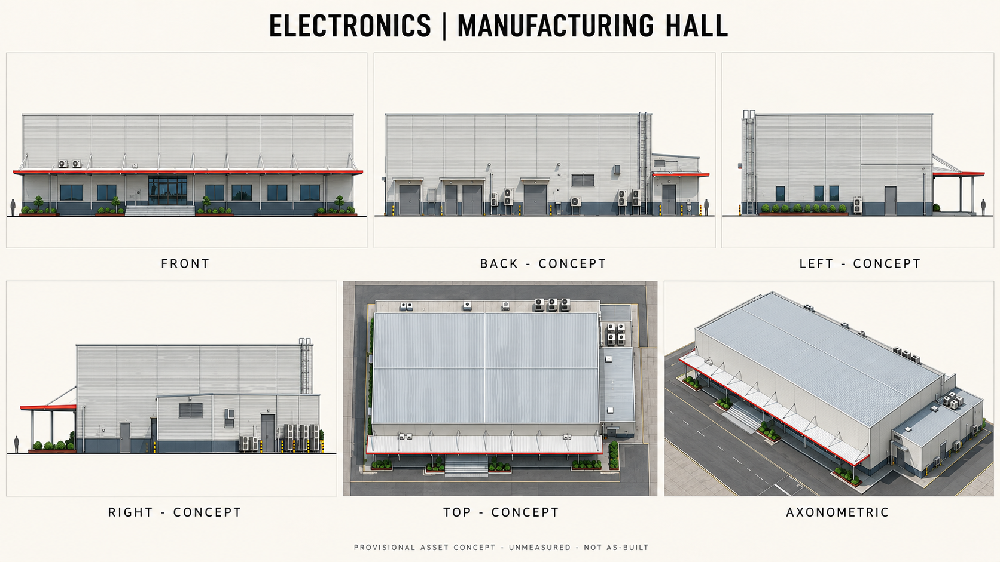
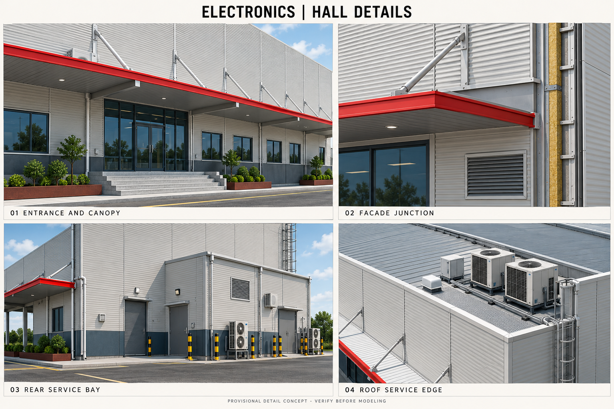
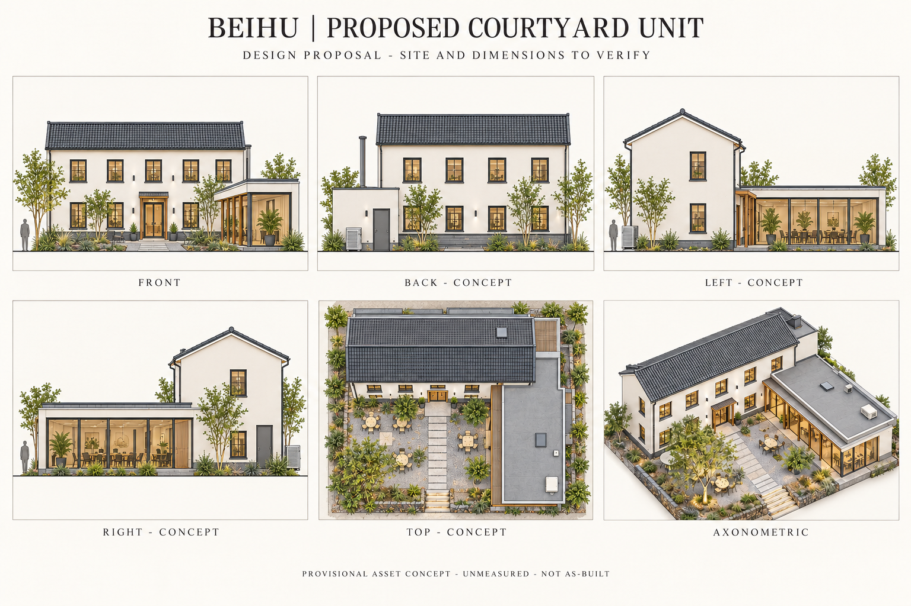
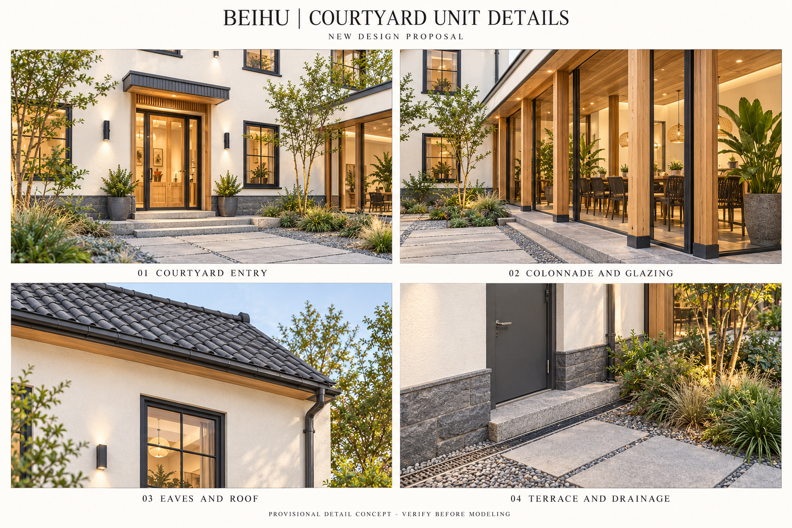
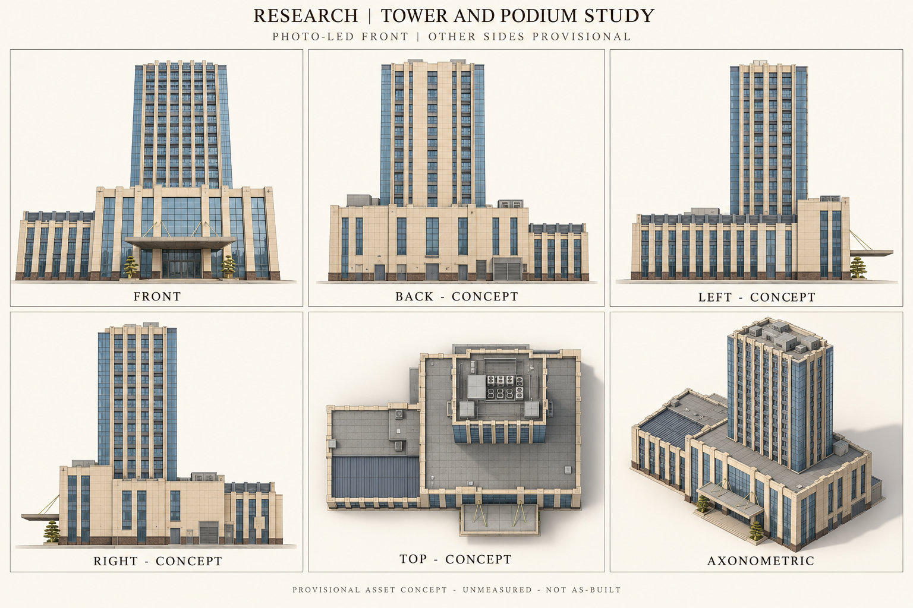
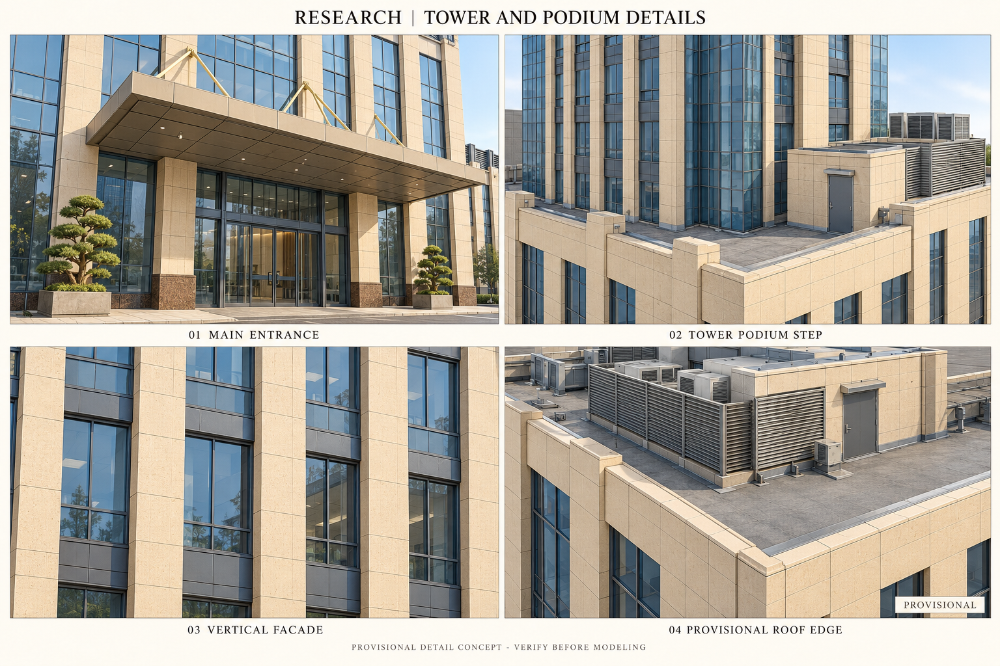

01
绿色家居
家居生产厂房代表单体参考驱动的类型概念；背侧面、附楼和尺寸待核
正面 · 背面 · 左右侧面 · 屋顶俯视 · 轴测
FRONT正面 / BACK背面 / LEFT左侧 / RIGHT右侧 / TOP屋顶俯视 / AXONOMETRIC轴测。点击原图放大查看。

四个建筑局部放大
装卸门与防撞柱 / 采光带与檐沟 / 办公附楼与厂房连接 / 服务附房与疏散设施

展开原始实拍或卫星参考
02
电子信息
电子制造车间代表单体今上实拍驱动的类型概念；背侧面、屋顶与尺寸待核
正面 · 背面 · 左右侧面 · 屋顶俯视 · 轴测
FRONT正面 / BACK背面 / LEFT左侧 / RIGHT右侧 / TOP屋顶俯视 / AXONOMETRIC轴测。点击原图放大查看。

四个建筑局部放大
入口台阶与红边雨棚 / 金属板与窗墙接缝 / 后勤服务与疏散门 / 屋顶女儿墙与设备

展开原始实拍或卫星参考
03
科创部落
北湖低层院落科创单元设计提案新设计提案；不是已建成科创建筑
正面 · 背面 · 左右侧面 · 屋顶俯视 · 轴测
FRONT正面 / BACK背面 / LEFT左侧 / RIGHT右侧 / TOP屋顶俯视 / AXONOMETRIC轴测。点击原图放大查看。

四个建筑局部放大
院落入口与石阶 / 木廊与玻璃翼连接 / 坡屋面与檐口 / 石基与铺装排水

展开原始实拍或卫星参考
04
科创研发
羊山智慧岛主楼与裙房资产研究正面照片驱动；背侧面和屋顶为推定，片区坐标归属待核
正面 · 背面 · 左右侧面 · 屋顶俯视 · 轴测
FRONT正面 / BACK背面 / LEFT左侧 / RIGHT右侧 / TOP屋顶俯视 / AXONOMETRIC轴测。点击原图放大查看。

四个建筑局部放大
主入口雨棚与玻璃门厅 / 主塔与裙房退台连接 / 竖向构件与幕墙分格 / 屋顶女儿墙与设备屏

展开原始实拍或卫星参考